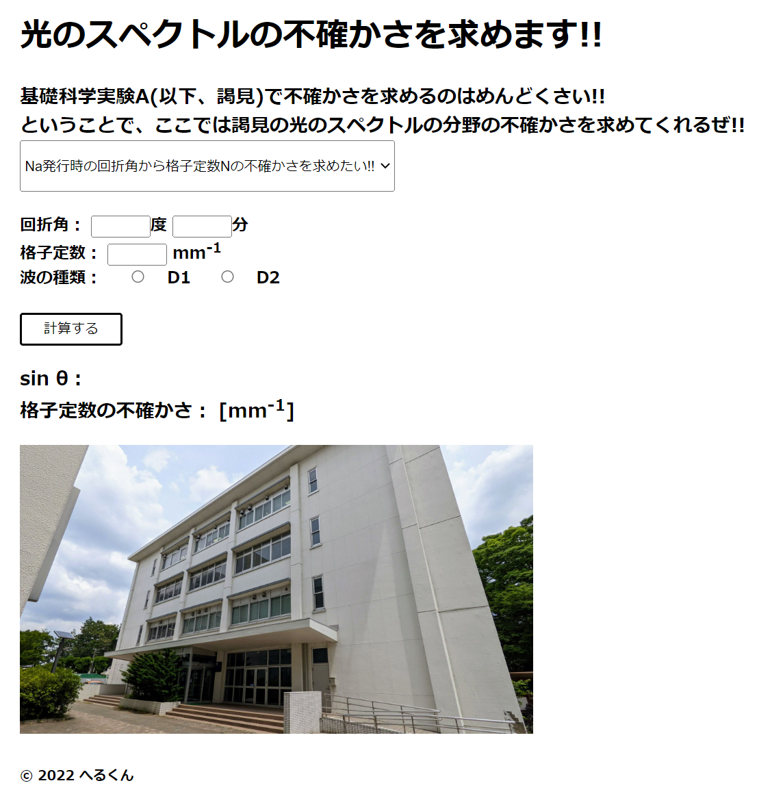
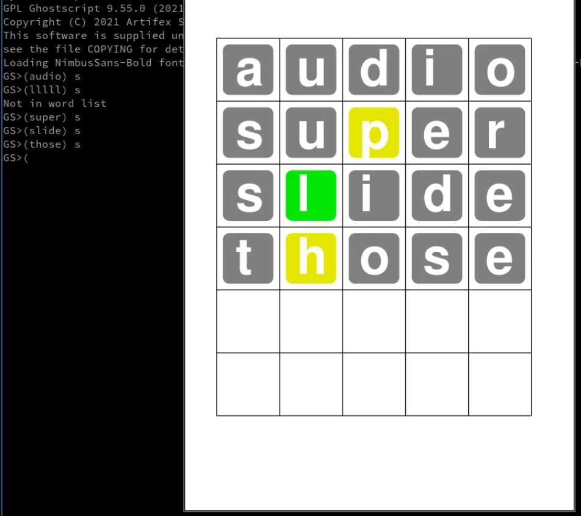
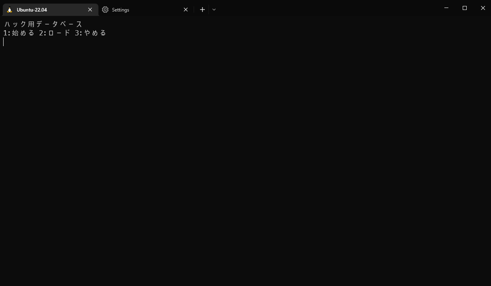
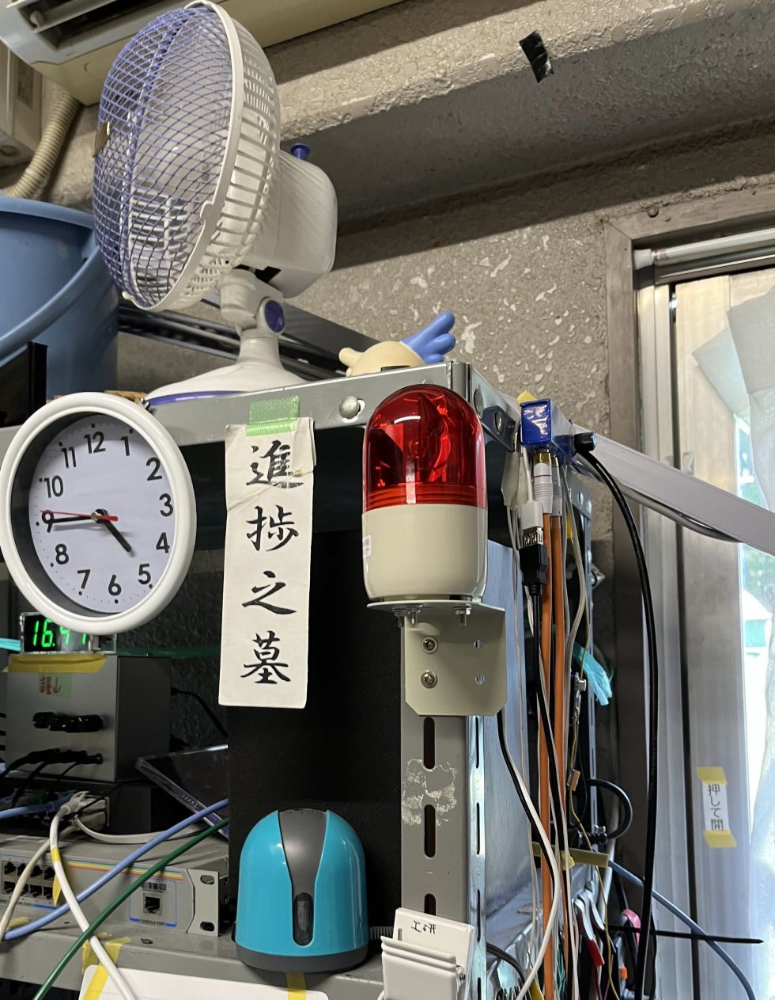
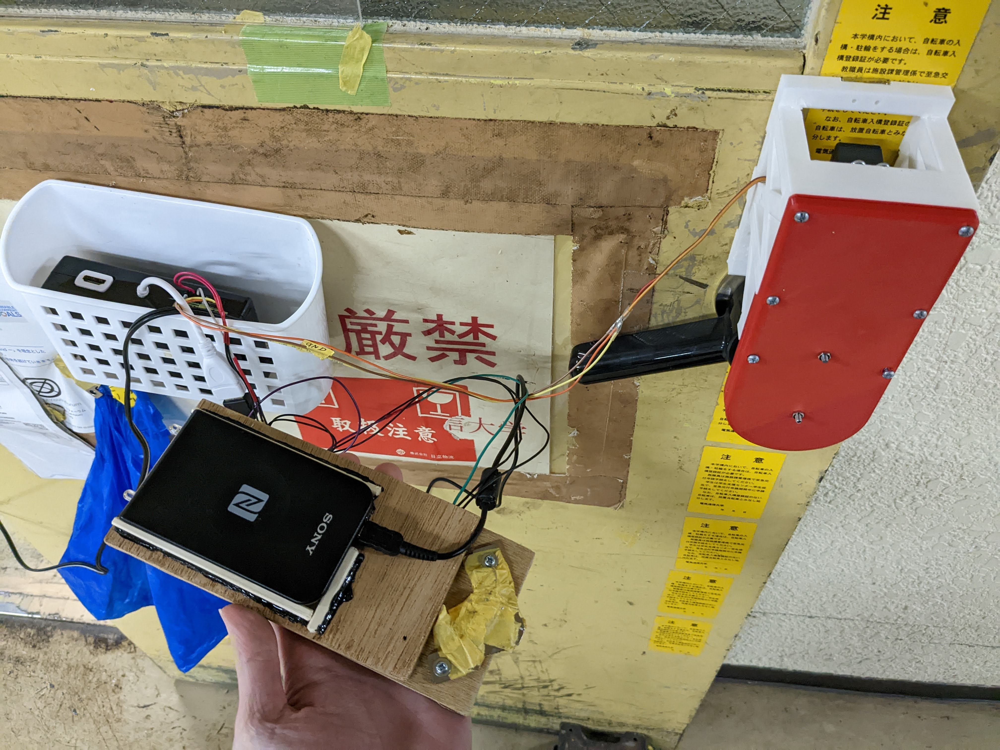
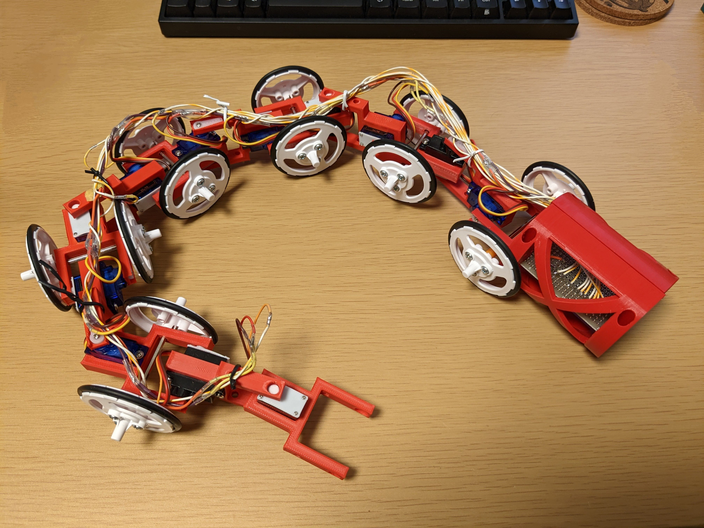
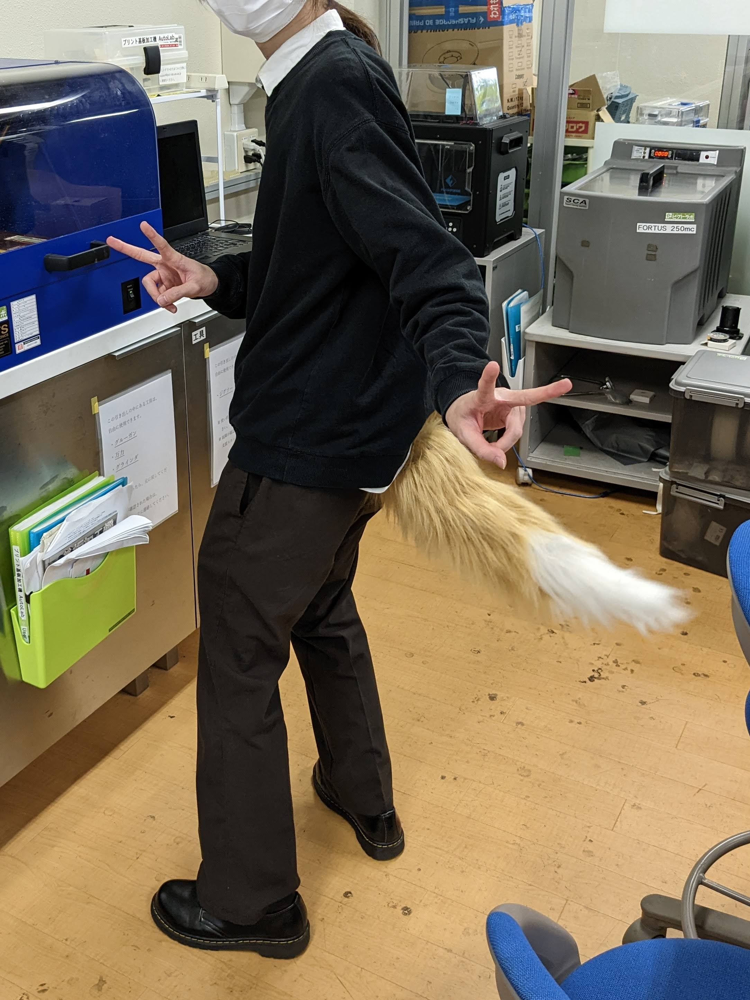
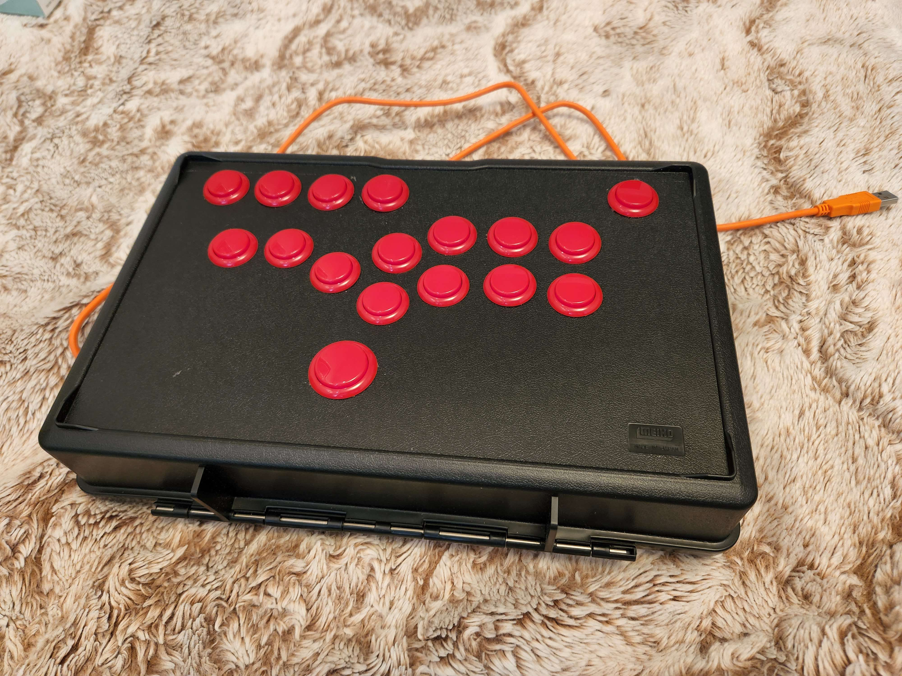
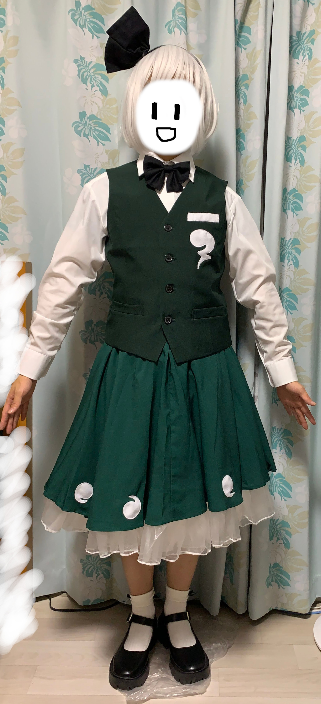

☆ようこそ☆
工学研究部調布祭特設サイトです。調布祭当日は色々やっているそうですよ。
工研×鉄研×東大プラレーラーズ合同プラレール企画
今年は鉄道研究会に加えて東大プラレーラーズと合同でプラレール企画をA棟402教室で行っています。YouTubeでも配信しています。
調布競馬
メカダービーなどを使用して馬のレースを行います。対面形式でA棟403教室にて開催する予定です。
同時進行でYouTubeでも生配信を行う予定ですので、都合が合わない方はぜひYouTubeをご覧ください。
工学研究部YouTubeチャンネル
そもそもメカダービーとは?
メカダービーとはミニ四駆のメーカーとして有名なTAMIYAが販売しており、両足キック走行で走る競走馬です。ヨドバシカメラやビックカメラなどの店頭に置いてあります。
自分だけの愛馬を出場させませんか?
自分だけのメカダービーを改造して馬主になることも可能です。あなたもメカダービーを購入して馬主になりませんか？詳しくは工学研究部公式Twitterをご覧ください。
工学研究部公式Twitter
また、出場馬などのレース情報は調布競馬ポータルに掲載されているのでご覧ください。
調布競馬ポータル
作品展示
部員が製作した作品を紹介します。一部作品は調布祭当日にA棟403教室で展示しています。
CUDA Ray-Trasing
Created by 雪風

GPUを使ってリアルっぽい画像を生成してみました。
謁見の光のスペクトルの不確かさを求めてくれるサイト
Created by へるくん

謁見履修者を救うために作りました。D棟爆破機能をつけることで、光のスペクトルの実験がある人だけでなく、
謁見履修者全員を救うことを可能にしました。
謁見の光のスペクトルの不確かさを求めてくれるサイト
PoScle
Created by りんりん

PostScriptで作ったWordle
SHAREVOX
Created by Yちゃん

テキスト読み上げソフトです。技育展2022 AI/データ分析部門 最優秀賞。ぜひ遊んでみてください。
SHAREVOX
Seknot
Created by ぼいど

ブロックチェーン上のTokenの発行と活用を手軽に行えるプラットフォームです。技育展2022 インフラ/セキュリティ部門 優秀賞。サービス公開中です。
Seknot
Bash SelectMenu
Created by 雪風

Bashでインタラクティブな選択メニューを作りました
ハックデータベース
Created by furatto

より快適にハッキングするためのデータベースを作っています。
CO2アラート
Created by ぼいど

部室のCO2濃度を監視して一定位濃度以上になるとDiscordと回転灯で換気を促してくれます。
ダミヘ
Created by しぐれ

マネキンの耳を切り取ってマイクを入れてダミーヘッドマイクを作りました。
プラレールラジコン計画
Created by スバル

みんなも1度は遊んだことがあるだろうプラレールをラジコン化！
コントロールで操作も自由自在！工研鉄研合同企画にて絶賛走行中！君も運転してみよう！！！
電光掲示板
Created by もっちゃん

KagiMod for Koken
Created by りんりん

部室の鍵をスマホで開けられるようにした
KagiMod for Home
Created by りんりん

部屋の鍵をスマホで開けられるようにした
工研LED看板
Created by りんりん

MMAみたいに部室に光る看板をつけた
うねうねロボ
Created by りんりん

うねうねして進むロボット
ぐねぐねロボ(制作中)
Created by りんりん

ぐねぐねして進むロボット
うごくしっぽ
Created by りんりん

うごくしっぽ
オシロお絵描き
Created by りんりん

オシロで絵を描いた
自作レバーレスアケコン
Created by hosi

レバーレスアケコンを自作することで比較的安く作成しました。最速で技が出ます。
乾式筋電センサ
Created by Valkyrie

乾式筋電センサをできるだけ安く制作しました。
F-16用MFD
Created by ねむろ

V-USBを使ったHIDデバイスです。モニタも点きます。
ラダーペダル
Created by ねむろ

Arduinoを使った3軸入力のHIDデバイスです。フライトシム用に作りました。
Viper_Throttle
Created by ねむろ

STM32を使ったF-16用HIDデバイスです。
すれ違い通信もどき
Created by しぐれ

M5stickCのBLEですれ違い通信のようなことをさせました。
コスプレ
Created by たむ

売っている服を組み合わせて手軽に安くコスプレを作ろうというコンセプトでした。
本当に手軽に安く作れたのか？ その結果は部報を見よ！